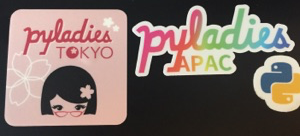
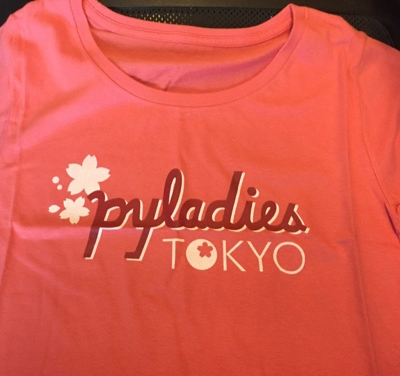
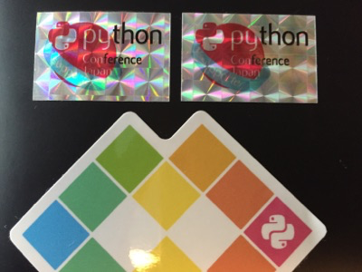
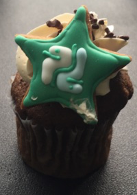

鉄は熱いうちに打て
=============================
PyCon JP 2016 2日目とブースと私¶
2016-09-22
私のPyCon JP 2016が終わりました。
ブースにもたくさんの方に来ていただいてありがとうございました。
今年もみんなすごいなーと思っているうちに終わってしまいました。
ブースに気持ちが持って行かれて、トークは一つしか聞けませんでしたが、やる気は注入されました。
貰ったり、買ったりしたもの。¶
 PyLadiesシールとシャツ
募金した人が貰えるシール（2回目）
Pythonマークのカップケーキ
来年へ向けて¶
来年も憧れのスタッフはできなさそうですが、スピーカーに選ばれるように頑張ります。どう頑張るかはこれから。。。。
やる気があるうちに、WordPressとPHPのメンテをするのが嫌になっていたこのBlogをSphinxで作った静的htmlに入れ替えました。 DBも使わないし、MarkDownでも編集できるし、便利ですね。
PyCon JPに一言¶
毎年行きたいので、続いていくことを祈っています。関係者の皆様、ありがとうございました。